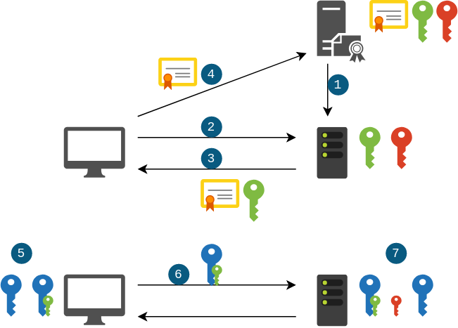
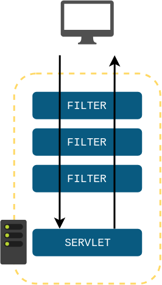
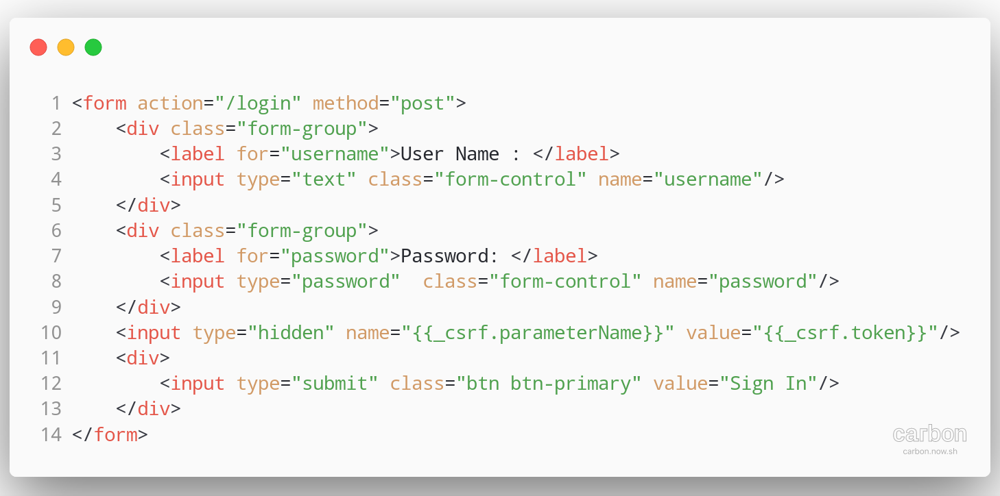

ALOM
🔒 Security
UBER

🤔 Problématiques :
- Comment sécuriser les données ?
- Comment authentifier les utilisateurs ?
🎚️ Niveaux de sécurité
- Physique : Contrôle d'accès, biométrie
- Hardware : Encryption des disques
- Middleware : Firewalls (blocage d'IP/Ports), VPN (réseaux privés virtuels)
- Software : Authentification/Autorisation
- Data : Hashage / Chiffrement
HTTPS
HTTPS fournit un tunnel de communications sécurisé
Encryption des données via un algorithme asymétrique
Certificat validant l'identité du site + clé publique
HTTPS
⚠️ HTTPS
- Chiffre les données entre le client et le serveur
- Ne permet pas de valider l'identité de l'utilisateur
Software Security
- Authentication (authentification)
- Authorization (autorisation)
Authentication
Vérification de l'identité d'un "principal" (un user, un device, un système qui veut effectuer une action)
Authorization
Décider si un "principal" peut faire une action en particulier. (contrôle d'accès)
Authentification en HTTP
Utilisation du header
Authorization: <type> <credentials>
Authorization: Basic QXNoOnBhc3N3b3Jk
Authorization: Bearer QXNoOnBhc3N3b3Jk
Authentification en HTTP
Authorization: Basic QXNoOnBhc3N3b3Jk
Les logins/mots de passe (ou tokens) transitent dans les headers
C'est pour ça que l'on doit utiliser HTTPS !
En servlets
Utilisation des servlet filters
En 
spring-security
- Authentification (validation des credentials)
- Utilisation d'un Cookie HTTP pour identifiant de session
- Stockage de "principal" en session côté serveur
- Logout : suppression de la session
- Protection contre le vol de session (CSRF & Session Fixation)
- Protection contre les appels venant de sources inconnues (CORS)
spring-security
Page de login
spring-security
Sécurisation des services REST par défaut
- Username :
user - Password : loggué sur la console
Using generated security password: 112eb169-1567-42fe-bf0e-7c7bc94a5afa
spring-security
Personalisation de la sécurisation des services REST
- Username :
spring.security.user.name - Password :
spring.security.user.password
TP